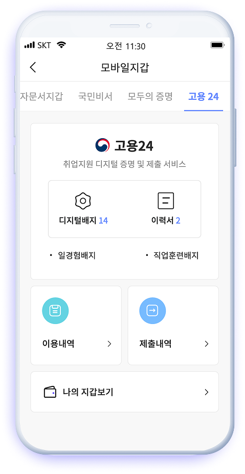

PASS지갑- 고용24
모바일에서 경력증명 & 이력서 디지털 배지 발급 및 제출 원스톱
#기획
#IA
#UXFlow
#공공서비스
아이디어에서 런칭까지, 하나의 사이클을 끝까지 설계하고 실행합니다.
방향을 제시하고, 팀의 중심을 잡습니다.
공공, B2B, B2C까지 — 도메인을 넘나드는 문제 해결 패턴.
브랜드 스토리와 사용자 경험을 하나의 흐름으로 엮습니다.
기획부터 설계, UIUX 디자인까지, 서비스 전체를 연결하고 완성하는 UXCreator
브랜드 아이덴티티와 사용자 경험을 하나의 흐름으로 통합
PASS 앱 내에서 각종 고지서(건강보험, 세금, 범칙금 등)의 수신·열람·결제까지 연결하는 서비스.
On-premise 생성형 AI를 적용, 근거가 보이는 답변과 거버넌스를 동시에 제공하는 업무 도우미.
시민이 직접 정보를 제보하고, 실시간으로 소통하는 생활 밀착형 정보 플랫폼.
브랜딩 감각과 UX 전문성을 결합해,
복잡한 문제를 단순하고 직관적인 사용자 경험으로 바꿉니다.